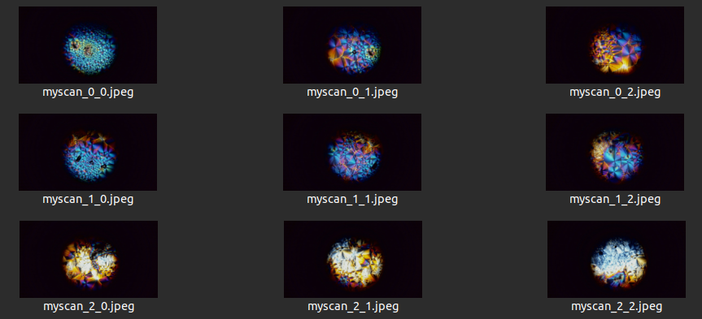
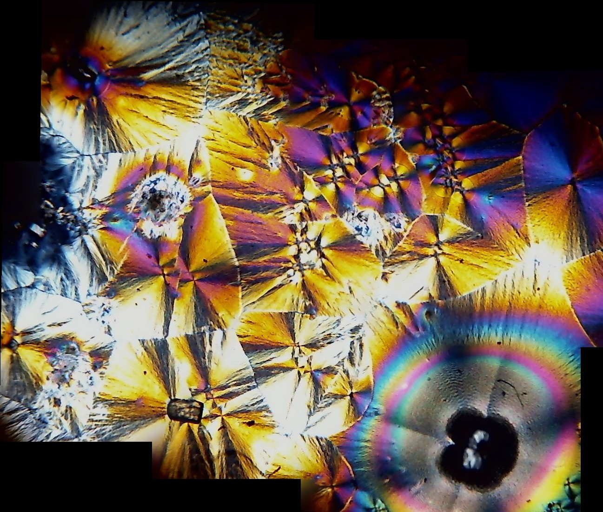

Scanning slides with a microscope, a 3D printer and a webcam
In my previous crystal photography post I showed some beautiful pics of vitamin C crystals photographed through a microscope, with polarizing film bringing out some psychedelic colors. Those were all taken with my phone pointing down through the eyepiece. The natural next step is to scan across a slide and stitch the images together to make a high-res image of a whole slide. And since I already have a 3D printer, this turned out to be fairly easy to do!

The webcam is mounted to the scope with a 3D-printed adapter. The CAD for that, and all code, is in this repository. The software sends G-CODE commands to the printer over USB to move the slide in small increments, then waits for it to settle before taking a picture. Since coding is ~free thanks to AI, it has a GUI based on PyGame for setting the start position, and fancy command-line args and everything :D Here’s an example command you might run to take 9 images in a 3x3 grid:
python3 mosaic.py \
--serial_port /dev/ttyUSB0 \
--camera_device /dev/video4 \
--prefix "capture/myscan" \
--x_step 1.5 \
--y_step 1.5 \
--n_x 3 \
--n_y 3 \
--settle_time 300This stores 9 individual images:

These can be stitched together in a few different ways. I include a notebook using OpenCV to do this in the repo. Here’s the result of stitching the 9 images together:

Sadly, the webcam quality isn’t great! So after all that, the best results came from using the phone with this app to make mosaics. The results are ok (example) but I hope to find a better solution soon - maybe it’s as simple as using the phone as a webcam and manually stitching the images based on the grid coords.
Update: I found https://mattabrown.github.io/autostitch.html to work well on frames extracted from video through the cellphone. Hooray for good free software!